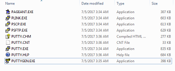
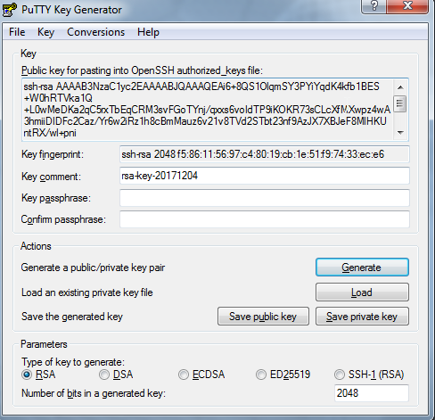

Pelican配置
周一 11 十二月 2017
详细的配置项参考官方文档Pelican配置
这里贴下我自己的配置, 目前所做改动不多，主要是生成文章时候的一些配置，后续随着个性化配置增多，这个文章也会随时更新。
另外，我特别喜欢waterspill-en这个主题，把它放到了工程目录下的themes上了。
pelicanconf.py
基础配置文件
1 2 3 4 5 6 7 8 9 10 11 12 13 14 15 16 17 18 19 20 21 22 23 24 25 26 27 28 29 30 31 32 33 34 35 36 37 38 39 40 41 42 43 44 45 46 | #!/usr/bin/env python
# -*- coding: utf-8 -*- #
from __future__ import unicode_literals
AUTHOR = u'signsmile'
SITENAME = u'\u62db\u724c\u5f0f\u7684\u5fae\u7b11'
SITEURL = ''
PATH = 'content'
TIMEZONE = 'Asia/Shanghai'
DEFAULT_LANG = u'Chinese (Simplified)'
GITHUB_URL = 'https://github.com/signsmile/'
# DISQUS_SITENAME = "xxx" disqus被墙了没法用，占个坑吧
# Feed generation is usually not desired when developing
FEED_ALL_ATOM = None
CATEGORY_FEED_ATOM = None
TRANSLATION_FEED_ATOM = None
AUTHOR_FEED_ATOM = None
AUTHOR_FEED_RSS = None
# Blogroll
LINKS = (('Pelican', 'http://getpelican.com/'),
('Python.org', 'http://python.org/'),
('Jinja2', 'http://jinja.pocoo.org/'),
('You can modify those links in your config file', '#'),)
# Social widget
SOCIAL = (('You can add links in your config file', '#'),
('Another social link', '#'),)
DEFAULT_PAGINATION = 10
DEFAULT_DATE = 'fs'
FILENAME_METADATA = '(?P<date>\d{4}-\d{2}-\d{2})'
# Uncomment following line if you want document-relative URLs when developing
RELATIVE_URLS = True
STATIC_PATHS = ['images', 'extra/CNAME']
EXTRA_PATH_METADATA = {'extra/CNAME': {'path': 'CNAME'},}
THEME = 'themes\waterspill-en'
#TEMPLATE_PAGES = {'pages/jinja2_template.html': 'jinja2_template.html'}
|
publishconf.py
发布要用的配置文件，会继承pelicanconf.py的所有内容
1 2 3 4 5 6 7 8 9 10 11 12 13 14 15 16 17 18 19 20 21 22 23 24 | #!/usr/bin/env python
# -*- coding: utf-8 -*- #
from __future__ import unicode_literals
# This file is only used if you use `make publish` or
# explicitly specify it as your config file.
import os
import sys
sys.path.append(os.curdir)
from pelicanconf import *
SITEURL = 'https://blog.signsmile.com'
RELATIVE_URLS = False
FEED_ALL_ATOM = 'feeds/all.atom.xml'
CATEGORY_FEED_ATOM = 'feeds/%s.atom.xml'
DELETE_OUTPUT_DIRECTORY = True
# Following items are often useful when publishing
#DISQUS_SITENAME = ""
#GOOGLE_ANALYTICS = ""
|
By signsmile, Category: Skills
Tags: Pelican /
Other articles
Pelican自动发布到github
周六 09 十二月 2017
今天说下用Pelican写作过程中的自动发布流程，主要用到了Fabric 以及ghp-import这两个工具
简介
Fabric 是一个命令行工具，能够简化SSH的使用，主要用于应用的部署和系统管理任务。它能通过fab命令执行fabfile.py文件中自行定制的任务函数，任务函数中可以使用run函数通过SSH执行远端主机命令，local函数用于执行本地命令。
ghp-import 是专门用来将你的静态网站导入到github pages的工具。由于静态网站需要部署在github和根目录下，这样会导致Pelican工程文件和生成的静态网站文件没法在同一个github仓库中维护。而ghp-import能方便的建立并维护一个独立的分支（master或者gh-pages）专门用来维护静态网站（output目录），而用户可以手动的在另外的分支维护Pelican工程文件。
安装
Fabric
$ pip install fabric
ghp-import
- linux下
pip install ghp-import - Windows下
pip install https://github.com/chevah/ghp-import/archive/win-support.zip
配置
pelican-quickstart过程会自动在工程的根目录下生成一个fabfile.py …
By signsmile, Category: Skills
Continue reading …Pelican写作姿势
周三 06 十二月 2017
熟悉你的工具，才能用好它， 所以接下来几天我都会深入研究一下Pelican这个工具在实际场合上的应用。 因为我这边是用Markdown进行写作的，下面涉及的内容都是关于Markdown的。 详细的内容可以参考官方手册Writing content， 这里仅对我所感兴趣的部分进行罗列
文章和页面
首先，所有产生的文档都放在content下面，用于生成相应的静态页面。
文档分两种，Articles和Pages。Pages与Articles的唯一区别就是Pages放在content/pages目录下面，
而其他任何地方放的文档都是Articles。一般Articles用来写文章、博客等，而Pages用来写不经常变动的比如个人简介、联系方式等。
DISPLAY_PAGES_ON_MENU用来配置是否将Pages显示为导航菜单，而status: hidden进行单个Page设置
文件元数据
Markdown的文档信息格式如下
Title: My super title //标题，唯一一个必须的，其他都可选
Date: 2010-12-03 10:20 //创建时间，如未指定且DEFAULT_DATE被设置为fs，文件的“mtime”时间戳将会被使用
Modified: 2010-12 …By signsmile, Category: Skills
Continue reading …在github pages上搭建博客
周二 05 十二月 2017
在上传Pelican生成的静态网站的时候发现绑定的域名没法访问， 上网一搜是因为缺少CNAME文件的配置，于是决定罗列下github上搭建博客的步骤，以备查询
-
首先得有个github账号，账号申请就不说了，github传送门
-
注册账号后新建一个仓库(repository)
这里需要特别留意的是仓库的名字必须以{username}.github.io命名，{username}用自己github的账户名替换

-
github上的仓库创建好以后同时也需要在本地创建个仓库以便维护，github会提供操作方法，命令行上照做即可。
echo "# signsmile.github.io" >> README.md git init git add README.md git commit -m "first commit" git remote add origin > https://github.com/signsmile/signsmile.github.io.git git …
By signsmile, Category: Skills
Continue reading …利用Putty生成SSH公钥私钥
周一 04 十二月 2017
装完git，居然没有ssh-keygen命令。无奈只好求助于putty，下载putty整个免安装的压缩包，里面有个PUTTYGEN.EXE工具可用于生成SSH的公钥和私钥

-
打开以后点击Generate

-
鼠标在空白区域内划啊划，直到进度条满了（puttygen会采集鼠标划过的位置生成随机数）

-
ssh公钥私钥已经生成，可使用Save public key 和 Save private key按钮保存ppk格式的公钥和私钥文件
 -
如果要产生OpenSSH格式的私钥，只需点击Conversions菜单下面的Export OpenSSH key即可。而对应OpenSSH格式的公钥在窗口界面直接复制即可

-
将公钥上传到github文章，将ssh文件重命名为id_rsa的私钥放到C:\Users\username.ssh目录下即可
Tip:windows下直接创建以.开头的文件或者目录会报错，在后面再跟一个.就可以了。比如 .ssh.
By signsmile, Category: Skills
Continue reading …Pelican入门
周日 03 十二月 2017
在github搭建博客，刚开始用Jekyll，然后发现里面的Markdown排版很奇葩，网上说要换Markdown解析器，不想折腾（有时候懒是一种美德）。继而研究Hexo，环境还没装好呢，让我看到了Pelican......
我这不刚好有python环境吗？于是乎......
首先你要有python环境，然后就很简单了...
安装Pelican以及Markdown库
pip install pelican markdown
创建你的博客工程目录，当然如果是windows系统的话直接手工创建也行
mkdir -p ~/projects/yoursite
cd ~/projects/yoursite
关键语句pelican-quickstart，用来创建母版工程。这时候你需要回答一些问题，根据实际情况填上即可。
C:\Users\xxx\Blog_Pelican>pelican-quickstart
Welcome to pelican-quickstart v3.7.1.
This script will help you …By signsmile, Category: Skills
Continue reading …Markdown语法速查
周六 02 十二月 2017
word没法git管理，txt没法排版，Markdown正合适
这里整理了一份Markdown语法速查，作为手边工具
区块元素
段落和换行
段落
第一行
中间有空行
第二行
第一行
第二行
换行
空格+空格+回车
第一行
第二行
标题
Markdown 支持两种标题的语法
类Setext
最高阶标题
=
第二阶标题
-
最高阶标题
第二阶标题
类atx形式
# H1
## H2
### H3
#### H4
##### H5
###### H6
H1
H2
H3
H4
H5
H6
区块
用 >，可嵌套
> 一级区块
>> 二级区块
>>> 三级区块
>
> *区块内可以直接加其他语法*
一级区块
二级区块
三级区块 …